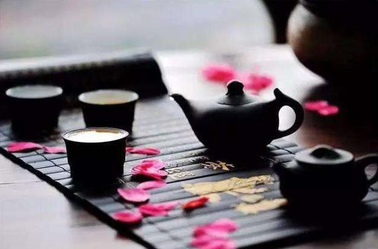
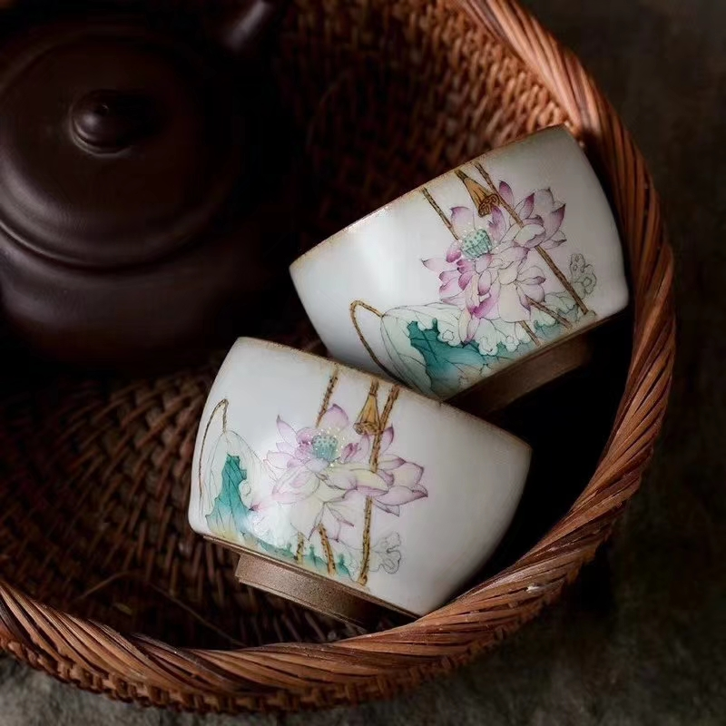
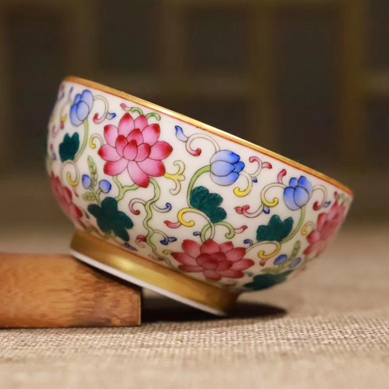
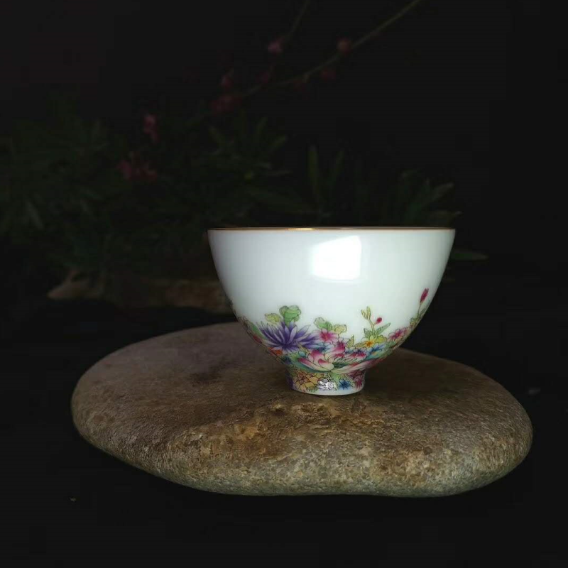
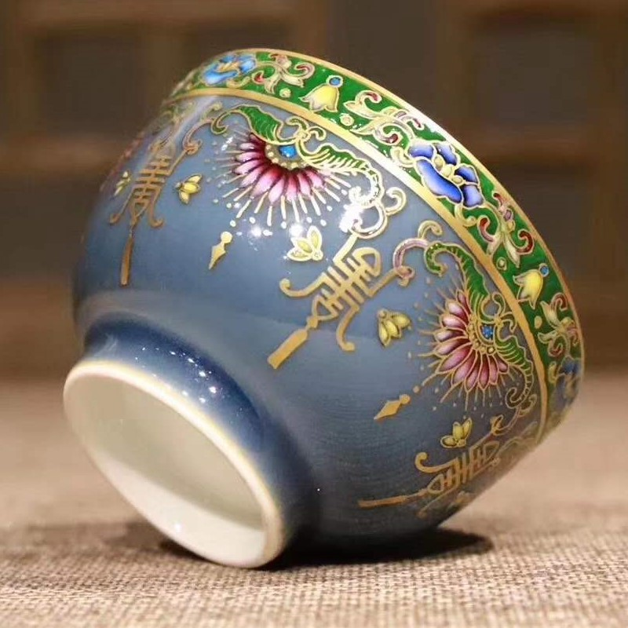
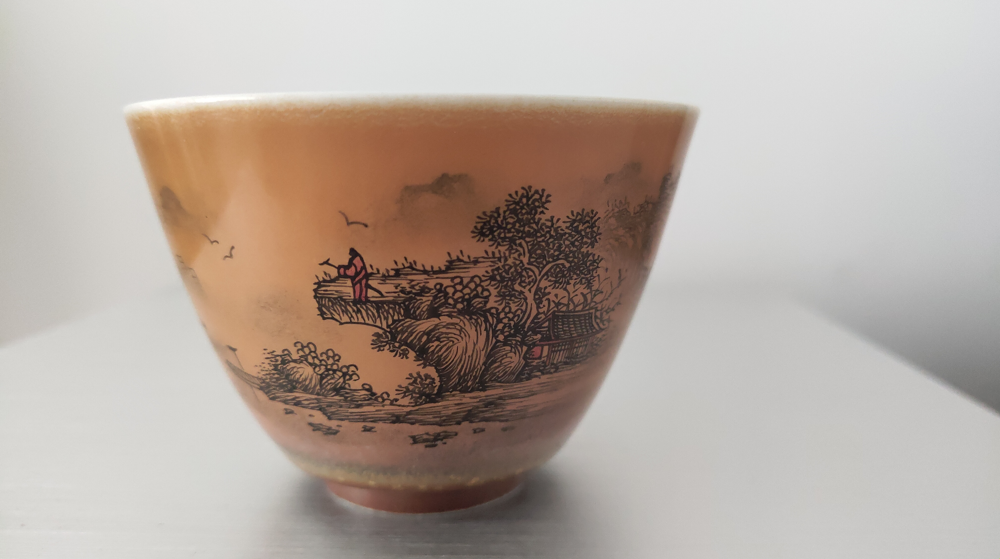

汝瓷造型古朴大方，以名贵玛瑙为釉，色泽独特，有“玛瑙为釉古相传”的赞誉。随光变幻，观其釉色，犹如“雨过天晴云破处”，“千峰碧波翠色来”之美妙，土质细润，坯体如侗体其釉厚而声如磬，明亮而不刺目。

青花瓷又称白地青花瓷，简称青花，属釉下彩瓷。青花瓷是用含氧化钴的钴矿为原料，在陶瓷坯体上描绘纹饰，再罩上一层透明釉，经高温还原焰一次烧成。钴料烧成后呈蓝色，具有着色力强、发色鲜艳、烧成率高、呈色稳定的特点。

粉彩瓷装饰画法上的洗染，吸取了各姐妹艺术中的营养，采取了点染与套色的手法，使所要描绘的对象，无论人物，山水，花卉，鸟虫都显得质感强，明暗清晰，层次分明。

尚书有载：一曰寿、二曰富、三曰康宁、四曰攸好德、五曰考终命，此乃五福。五福降临，寿为首。五福万寿杯，本金古长寿纹，再辅以粉彩花卉、卷草，召示命运长久福寿绵长；

醉翁之意不在酒，在乎山水之间也。山水之乐，得之心而寓之酒也。若夫日出而林霏开，云归而岩穴暝，晦明变化者，山间之朝暮也。野芳发而幽香，佳木秀而繁阴，风霜高洁，水落而石出者，山间之四时也。朝而往，暮而归，四时之景不同，而乐亦无穷也。
醉翁之意不在酒，在乎山水之间也。山水之乐，得之心而寓之酒也。若夫日出而林霏开，云归而岩穴暝，晦明变化者，山间之朝暮也。野芳发而幽香，佳木秀而繁阴，风霜高洁，水落而石出者，山间之四时也。朝而往，暮而归，四时之景不同，而乐亦无穷也。